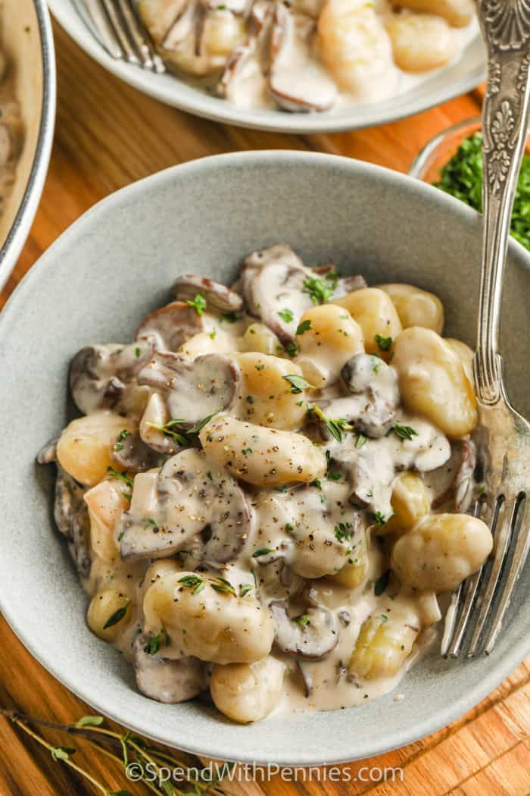

Gnocchi with mushroom sauce
Home
Meatloaf
Milanesas

Dish with delicious looking Gnocchi
The following is a very simple recipe to make the most delicious homemade gnocchi that you will every try.
To go ahead with the recipe you will need the following ingredients:
Ingredients:
For the gnocchi
- 1 kg potatoes
- 500 gr flour
- 1 egg
- Nutmeg
- Salt
- Black pepper
For the sauce
- 250 gr Mushrooms
- 1 medium sized onion
- 1 Green onion
- 250 ml Milk cream
- Salt
- Black pepper
Steps:
Gnocchi Dough
- Wash and peel the potatos
- Place them in a pot with water and boil
- Once the potatoes are cooked mash them trying to avoid lumps
- Add the egg and the condiments
- Add the flour little by little, kneading the dough until the texture is consistent
- Set aside
Mushroom Sauce
- Wash mushrooms and onions
- Cut the mushrooms in thin slices and set aside
- Cut the onion in cubes and stir-fry until tranlucent
- Cut the green onion and separate the green part for later
- Add the mushrooms to the pan.
- After a few minutes add the milk cream
- Add salt and pepper
- Add the leaves of the green onions
Preparing the Gnocchi
- Put a pot with water to boil
- Spread some flour on a plate
- Take a dollop of dough and make balls of about the size of a small grape or a big blueberry
(you can get some flour on your hands to avoid stickyness)
- Take a fork and run the ball of dough along its teeth in a quick motion.
This should leave the imprint of your finger in the ball making it look like shell pasta
- Once you have made a few of them go ahead and put them in the boiling water. Make sure not to put too many at the same time.
- When the gnocchi start to float its time to serve!